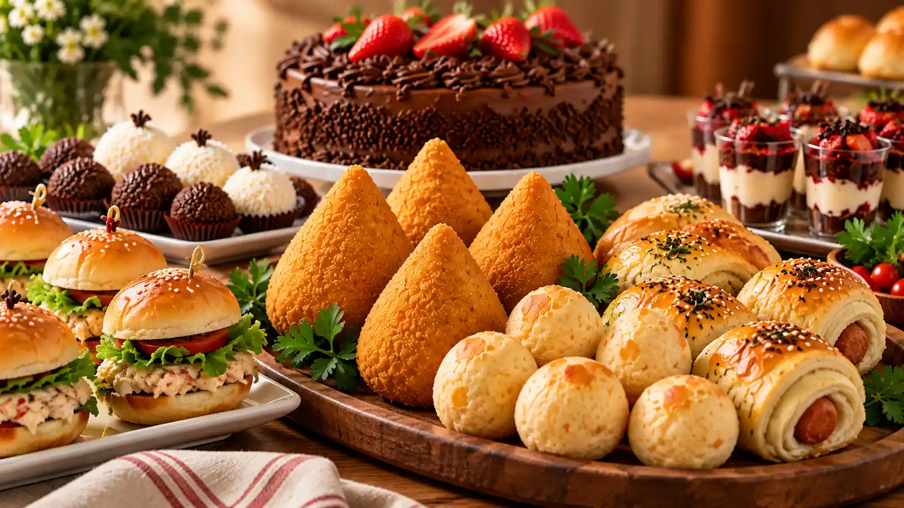
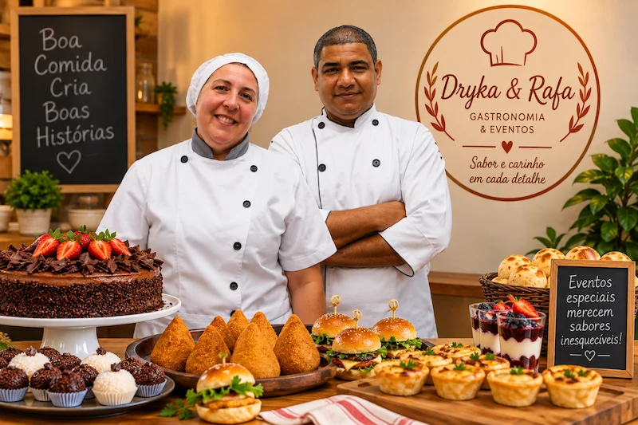
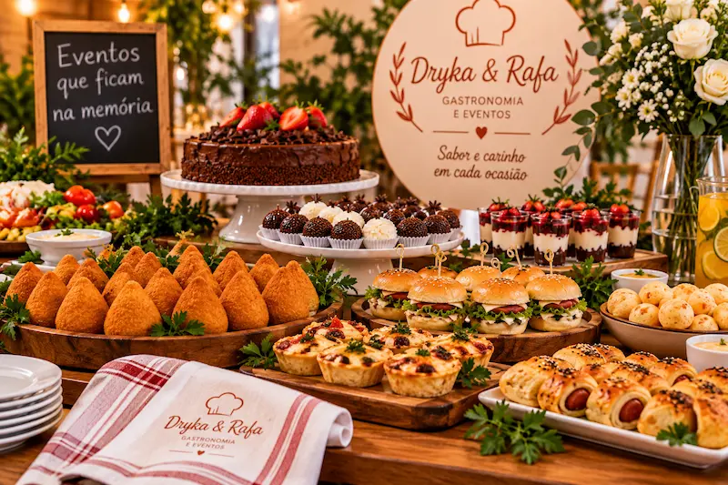

Sabor e carinho para todos os momentos
Salgados feitos na hora, doces finos e serviço completo de buffet para tornar sua comemoração inesquecível.

Sobre a Dryka & Rafa

A Dryka & Rafa Gastronomia & Eventos nasceu da união, do amor pela culinária e das tradicionais receitas de família que atravessam gerações. O que começou no coração da nossa cozinha caseira expandiu-se, com muito trabalho e dedicação, para a nossa loja física no Jardim Boa Esperança, em Guarujá.
Cada salgado enrolado à mão, cada doce confeitado e cada travessa de massa fresca carrega o nosso compromisso com ingredientes de qualidade, atendimento acolhedor e o sabor inconfundível de comida feita com a alma.
Nossos Produtos
Ver Cardápio CompletoServiços para seu evento
Oferecemos praticidade, pontualidade e sabor impecável para cada momento especial. Nossos serviços incluem encomendas de doces e salgados, buffet completo, almoços e massas caseiras, além de produtos disponíveis em nossa loja física para retirada.
Solicitar Orçamento